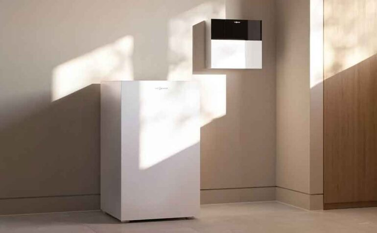
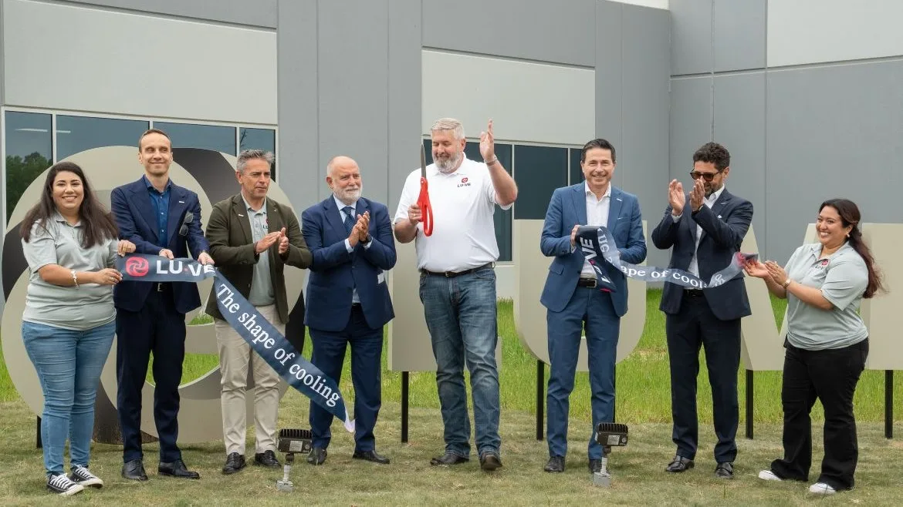

Sharma Tech — Construction / Engineering / Tech News
Edition No. 6 — Friday, November 20, 2026 (ET)
Daily edition for Sharma Electric & HVAC (Florida electrical + HVAC subcontractor). News window: Thu Nov 19, 5:00 AM ET – Fri Nov 20, 5:00 AM ET, widened to 72 hours only for items not in prior editions. Updates to earlier stories are labelled as updates. Prices are stated only where a source publishes one. Photos are pulled from the articles cited, and each PHOTO line names its source page.
At a Glance
- Hudson Tunnel: Both tubes of the $16 billion Hudson Tunnel Project are now officially under construction — the Gateway Development Commission confirmed at its Wed Nov 18 board meeting that the second tunnel boring machine has launched into the southern tube, joining the October machine that has already bored about 400 feet of the northern tube.
- Update — Brooklyn collapse: New York City ordered the controlled demolition of 1323 Flatbush Ave on Wed Nov 18 after forensic engineers found the building damaged by the Nov 11 collapse too unstable for workers to enter and shore; ENR's records review also found the approved plans required movement, crack and vibration monitoring whose data has not been released.
- Construction tech: EarthCam launched its App Marketplace on Thu Nov 19, putting 50-plus integrations — Procore, Autodesk Forma, CMiC, InEight, Kahua, Projectmates, Raken and agentic AI connectors — inside its Control Center platform, so jobsite imagery, AI reports and weather data flow into the systems GCs already run.
- HVAC supply chain: Italian heat-exchanger maker Luve has opened a roughly 215,000 sq. ft. expansion of its Jacksonville, Texas plant (now over 320,000 sq. ft.), mainly to build outdoor cooling products for data centers under a multi-year hyperscaler framework agreement, with about 200 more employees planned over 18–24 months.
- Florida: SECO Energy is building three Central Florida facilities with DPR Construction — a 92,000 sq. ft. headquarters plus 101,000 sq. ft. warehouse in Sumterville (Sumter County) and roughly 75,000 sq. ft. operations centers in Ocala (Marion County) and Groveland (Lake County), all inside Sharma's territory — and a federal jury has convicted two men over an $8.9 million VA construction contract fraud at Bay Pines in Pinellas County.
- Electrical spotlight product (new today): Resideo First Alert CX6T Advanced AI Camera + Resideo One portal — an 8MP/4K turret camera with edge AI, natural-language video search, sound detection and built-in deterrence, managed across sites in the new Resideo One portal, introduced Thu Nov 19, 2026 at Resideo's CONNECT event; available through security distributors in the coming months.
- HVAC spotlight product (new today): Viessmann Vitocal 300-G intelligent energy (ie) — an indoor ground-source (brine-to-water) heat pump on natural refrigerant R290 (propane), 6–16 kW, SCOP up to 5.5, 70 °C supply temperature, on Viessmann's new One Base Intelligence control platform; announced by the manufacturer Mon Nov 2, 2026, shown publicly for the first time at GET Nord in Hamburg Nov 19–21, with deliveries starting Nov 30, 2026.
Product Spotlight
A cool new electrical product and a cool new HVAC product every weekday — fresh picks Monday–Friday; weekends carry Friday's picks.
2.1 — ELECTRICAL SPOTLIGHT: Resideo First Alert CX6T Advanced AI Camera + Resideo One Portal
Maker: Resideo Technologies, Inc. (NYSE: REZI), Scottsdale, Arizona — First Alert is a Resideo… · Released: Thu Nov 19, 2026 — introduced at Resideo's annual CONNECT Customer Event (PR Newswire, Nov 19, 2026). Labelled honestly: this is an introduction, not…
Why it's cool: This is low-voltage and smart-building work in exactly Sharma's shape: a pro-installed camera that sells the service with the device. The pitch to a small commercial client writes itself — one camera that sees in 4K at night, hears a smoke alarm or breaking glass, lets the owner search footage in plain words ("show me deliveries after 6…
Read the full story →2.2 — HVAC SPOTLIGHT: Viessmann Vitocal 300-G intelligent energy (ie) Ground-Source Heat Pump

Maker: Viessmann Climate Solutions (part of Carrier Global Corporation, NYSE: CARR), Allendorf… · Released: Mon Nov 2, 2026 — manufacturer's announcement (Viessmann Climate Solutions press release, Nov 2, 2026), with trade coverage following Nov 3–16; the…
Why it's cool: Ground-source is a small slice of Florida work, but the technology direction is the story: a mainstream maker (inside Carrier) shipping propane R290 as the standard refrigerant with the safety system engineered in, 70 °C output for retrofits, and a control platform that treats the heat pump, solar, storage and the EV charger as one…
Read the full story →Section 1 — Top construction / engineering / tech stories
1.1 — $16B Hudson Tunnel project launches its second tunnel boring machine — confirmed Wed Nov 18, reported Thu Nov 19, 2026
What happened: Construction of both new rail tubes on the $16 billion Hudson Tunnel Project is officially in progress in New Jersey, the Gateway Development Commission (GDC) confirmed at its board meeting on Wed Nov 18, 2026,…
Why it matters to Sharma: No direct scope — Sharma does not work the Northeast Corridor. The transferable points are the prefab-and-line-as-you-go discipline and the scale of long-duration infrastructure programmes, the same pattern Florida's own utility and transport builds are…
Read the full story →1.2 — UPDATE: After the Brooklyn collapse, the city orders the damaged neighbour demolished; plan records raise monitoring questions — ENR, updated Wed Nov 18, 2026
What happened: In the continuing Flatbush collapse story covered in Editions 1–4, New York City's Department of Buildings (DOB) on Wed Nov 18, 2026 ordered the controlled demolition of 1323 Flatbush Ave , the three-story building…
Why it matters to Sharma: A direct jobsite lesson for any Sharma work beside occupied structures: keep the contemporaneous record (photos, readings, inspection sign-offs) as carefully as the work itself. Sharma's own photo-and-checklist discipline on SHARMATRACK is the same habit,…
Read the full story →1.3 — EarthCam launches an App Marketplace with 50+ integrations inside Control Center — Thu Nov 19, 2026
What happened: EarthCam, the jobsite camera and visual-intelligence provider, on Thu Nov 19, 2026 (Globe Newswire) introduced the EarthCam App Marketplace , bringing together more than 50 apps and integrations inside its Control…
Why it matters to Sharma: Directional for Sharma's commercial work: expect camera imagery and AI progress/safety reporting to sit inside the GC's platform on larger Florida jobs, alongside the photo record Sharma keeps itself. Nothing to buy or change today. Source: EarthCam via Globe…
Read the full story →1.4 — Luve opens a 215,000 sq. ft. Texas plant expansion to build data center cooling equipment — ACHR News, Thu Nov 19, 2026
What happened: ACHR News reported Thu Nov 19, 2026 that Luve , the Italian manufacturer of heat exchangers and refrigeration/air-conditioning equipment, has opened a new production area at its plant in Jacksonville, Texas ,…
Why it matters to Sharma: A supply-chain signal for Sharma's HVAC side: the cooling-equipment capacity race is being built in the U.S. South, and manufacturers are bundling commissioning supervision with equipment — the same service layer Sharma's crews meet on commercial jobs. No…
Read the full story →1.5 — Jacobs and TYLin win $150M in program-management work on the Dulles and Reagan National airport upgrades — announced Tue Nov 17, reported Wed Nov 18, 2026
What happened: The Metropolitan Washington Airports Authority (MWAA) has selected Jacobs and TYLin for program-management and staff-augmentation support of the modernisation programmes at Washington Dulles International and…
Why it matters to Sharma: No direct scope (Virginia airports, outside territory). The pattern matters for reading Florida's own airport and utility programmes: oversight awards like this one are the leading indicator that construction procurements follow. Market signal only. Source:…
Read the full story →1.6 — FLORIDA: SECO Energy is building three Central Florida facilities with DPR — reported Thu Nov 19, 2026
What happened: Florida Construction News reported Thu Nov 19, 2026 that SECO Energy has started building three new facilities in Central Florida as part of a five-year plan to serve a membership that has grown from about 100,000…
Why it matters to Sharma: Market-temperature read inside Sharma's own territory (Sumter, Marion and Lake counties). The electrical scope on these facilities sits with DPR's in-house electrical arm, so this is not a pursuit item — no outreach on research alone. Source: Florida…
Read the full story →1.7 — FLORIDA brief: Two men convicted in an $8.9M VA construction contract fraud; Horizon of Oakland Park breaks ground; Tampa paves a record 86 lane-miles — Thu Nov 19, 2026
What happened: Three Florida items from Florida Construction News, Thu Nov 19, 2026. (1) Contract fraud convictions: a federal jury has convicted Matthew West, 55, of Lantana, Florida, and Kevin Kutina, 64, of Ramona, California…
Why it matters to Sharma: The fraud convictions are a standing reminder for any set-aside or teaming work Sharma touches: the bid representations have to match who really supervises, performs and is paid. Oakland Park (Broward) and Tampa paving sit outside Sharma's 11-county territory…
Read the full story →
Not confirmed — excluded from the confirmed items above
ASCE's New York infrastructure report card ("C-") — Construction Dive's Nov 19 listing confirms the headline and date, but the underlying ASCE figures were not retrieved in full for this edition, so the item is held here rather…
Read this section in full →About the reporting window
Confirmed in-window (Nov 19, 5:00 AM – Nov 20, 5:00 AM ET) items: 1.3, 1.4, 1.6 and 1.7 (all Nov 19) and the Resideo spotlight (introduced Nov 19). Item 1.1 was confirmed by GDC on Nov 18 and reported Nov 19; item 1.2 is a…
Read this section in full →